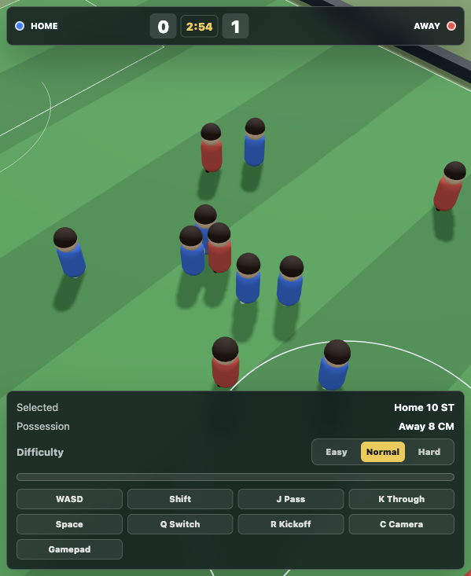

Ball control
- WASD: move your selected player
- Shift: sprint
- J: pass
- K: through ball
- Space: charge and shoot
Sakura Brick 11v11 Football
Maxx's football game is a browser-playable 11v11 match with difficulty settings, shot charge, passing, through balls, and camera switching.
Back to downloads
Keyboard
Win more
Offline